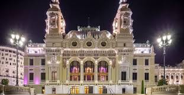
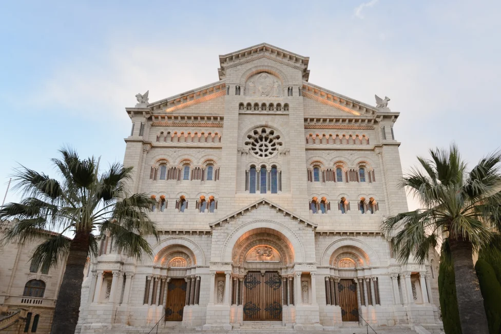

Monaco kultúrája különleges keveréke a francia és az olasz hagyományoknak, miközben saját, monacói identitással is rendelkezik. Az ország hivatalos nyelve a francia, de sokan beszélnek olaszul és angolul is. A helyi hagyományos nyelv a monégasque, amely egy ligur eredetű nyelvjárás, és ma is tanítják az iskolákban a kulturális örökség megőrzése érdekében.
Monaco kulturális életének egyik központja a híres Opéra de Monte-Carlo, amelyet ugyanaz az építész, Charles Garnier tervezett, aki a párizsi Operaházat is. Az opera és a klasszikus zene fontos szerepet játszik az ország életében, rendszeresen rendeznek koncerteket, balettelőadásokat és nemzetközi művészeti eseményeket.

Opéra de Monte-Carlo
A monacói kultúrában nagy hangsúlyt kapnak az elegáns társasági események és a sportok is. A Monacói Nagydíj világszerte ismertté tette az országot, de emellett a jachtversenyek, teniszversenyek és kulturális fesztiválok is fontosak. A luxus és a gazdagság erősen jelen van Monaco arculatában, ugyanakkor az ország igyekszik megőrizni történelmi hagyományait és mediterrán hangulatát.
A vallás szintén része a kulturális identitásnak: a római katolicizmus az állam hivatalos vallása. Fontos történelmi helyszín a A Szeplőtelen Szűzanya-székesegyház, ahol több monacói herceget és hercegnőt temettek el, köztük Grace Kelly hercegnét is.

A Szeplőtelen Szűzanya-székesegyház
Bár Monaco területe nagyon kicsi, kulturális hatása jóval nagyobb annál. Az ország egyszerre őrzi történelmi hagyományait és képviseli a modern luxuséletet, ezért a világ egyik legegyedibb európai államának tartják.